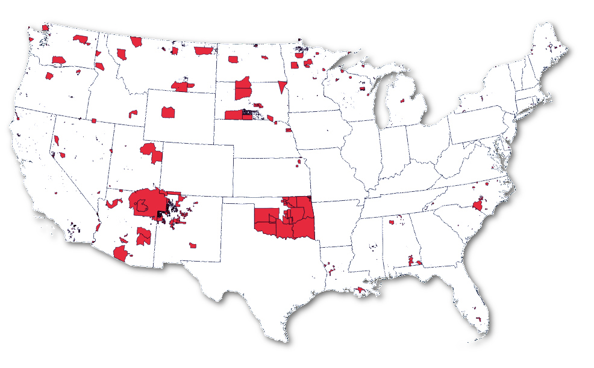
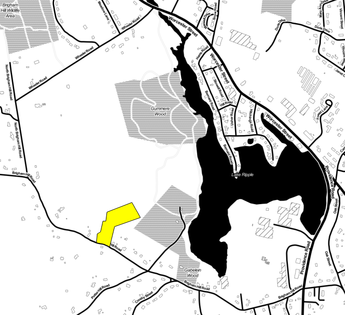

Reference Data
This was the easy part
Thanks to NaturalEarth Data, basic background information is extremely easy to come up with. I highly recommend using their data for all your small-scale mapping needs.
I created this as a gift for my map-loving cousin who is is part Native American and works in DC as an attorney for the National Indian Gaming Commission. I found out from his wife that he really liked the official maps put out by the US Census, but wanted "something retro" with the same data.
That seemed simple enough. Let's see what the data looks like.
Thanks to the super useful Census TIGER program, the American Indian and Alaskan Native (AIAN) shapefile was easy to download.
Note: In the spirit of honesty and transparency, I'm going to list each significant item that I Googled during the course of the project. Nobody knows everything, so the less we appear like we do, the more encouraging it is for beginners to begin learning.

The attributes were a little opaque, but after some searching I found that the
MTFCC field was the key attribute for the reservations.
Thanks to NaturalEarth Data, basic background information is extremely easy to come up with. I highly recommend using their data for all your small-scale mapping needs.
If you asked me to define what "retro" means I couldn't do it. It's one of those "you know it when you see it" things. Because of that, I headed to the trusty Google Image search to look for instpiration.
This was a very fruitful search term.
A representative sample of "retro maps"
Throughout my various searching and struggling to find a visual inspiration for the map, one map turned up that really captured my imagination.

Source: Nat Reed
The colors on this map were awesome and exactly what I was looking for!
Initially I wasn't sure how I was going to style the reservations, so I began by using the colors to build a subtle, retro background map. At the same time I wanted to utilize some of the cool cartographic features of QGIS which I had never used for cartographic design before.
In searching the David Rumsey map collection for stylistic inspiration I kept running into an outlined border gradient style. I thought that would make a nice and unique style for the background so I set out to replicate it in QGIS.
Source: David Rumsey Map Collection
In QGIS this was fairly simple thanks to the lovely Shapeburst graphic style as shown.
The 4-Color Theorem
Using that style was easy enough, but I wanted there to be some variation between state borders. For that, I turned to the Four Color Theorem.

Source: Wikipedia
Thanks to the
exhaustive plugins library, it's easy to extend QGIS' functionality.
For help automatically processing the four-color theorem I turned to
topocolour plugin. Strangely, QGIS threw a script error,
but it worked nonetheless! Now I had one of 5 unique color values for
each state border.
Blending Modes
For the borders I wanted colors that were complimentary to the existing
color scheme, but I knew that the bold colors I chose above would look
best as the reservations areas. To save myself the trouble of coming up
with five more colors in the same theme, I used another one of QGIS'
awesome tools - blending modes.
Blending modes is a special rendering type where pixels in one layer are
mixed together through the settings described here.
I used the blending mode Soft Light, which combines the
Burn - causing the underlying pixels to darken, and Dodge
- brightening and saturating the underlying pixels. The great part of this
in the end is that for the state outlines I pick a set of typical colors...
...and end up with a beautiful, subtle, retro color scheme.
Another major component of a maps style is the font choice. I wanted
to give this map a distinctive look, but I wasn't sure which fonts were
retro and which were modern. I turned to trusty Google.
The restuls were a lot of script fonts, and lots of "distressed" fonts with
faux degredation. I was looking for a "crisper" design, so I overlooked those
results.
Lots of nice looking fonts.
The first typeface that caught my eye was
was Muncie.
However it ended up being a difficult font to work into the design. I briefly tried similar fonts
like League Gothic
but felt that as a label the tall, narrow design wasn't as readable. From there I turned to Google Fonts.
Google Fonts
After completing the background styles it was time to symbolize and label
the reservations themselves. Cartographically, this was actually surprisingly difficult.
Here are the issues I ran into.
From the massive Navajo reservation in New Mexico and Arizona...
Scale: 1:2,000,000 (Background map courtesy Stamen)
Let's look at a segment of the official US Census map from the beginning:
Oklahoma had the Kiowa-Comanche-Apache-Ft Sill-Apache/Caddo-Wichita-Delaware,
(that's the full name!) to the Zia in Arizona. This meant that labeling
had to be flexible and contain enough rules so that both long name and short name
reservations showed up.
Looking at the Navajo map again, we see a few other difficulties:
The Style
The Labels
In the end, I decided that my first principle would be legibility. Since this
would be a 24"x36" framed canvas, I wanted the reservation names to be visible from 5'-6' away.
That meant a large display font. I went with 15pt Montserrat with a 1.5mm halo and a 1.5mm shadow.
This created enough visual hierarchy to separate the label from the background and
make it legible enough at long distances.
With legibility as a guide I setup the rest of the labeling rules so that as many
labels as possible were placed without sacrificing readability. I spent a
good deal of time trying to get this right. In the end I was fairly satisfied
with the tradeoff between accuracy and style.
I'm happy to share this strikingly retro map with you
completely hassle free!
Below is a 5K, high definition version for you
to download! Just click the image below to get the 5K jpg for your personal use.
It's perfect for all your desktop wallpaper needs.
The Fonts
My favorite source to turn to for fonts is the ever-growing Google Fonts library.
They provide an insane variety of free fonts that you can easily use in websites
or designs. I scrolled through the list looking for fonts that were similar to
the ones in the Google search above. In the end I settled on the following typefaces:
The challenge
Stylistic reservations
The reservations...
...to the tiny Hassanamisco (state) Reservation outside of Worcester, MA

Scale: 1:10,000 (Background map courtesy Stamen)
I can tell you from looking that those labels were hand-placed.
Artistic Decisions
Style and Substance?
After some experimenting, I decided to try to give the reservations and pseudo-3D appearance
using QGIS' brilliant styling options. I started with a darker shape offset 1px on
both the X and Y axis. Then I added an extra-thick border so that all the
very small reservations would show up. Then I capped it off with the color
picked from the inspirational map above.
The labels presented a serious conundrum. As a geographer I wanted to be sure
that every element on the map received equal representation. As an American I
didn't want to inadvertently disrespect any native tribes. As a layperson on Native affairs I didn't
want the map's recipient to call out any errors on the map. As an entrepreneur
I couldn't afford to spend the hours and hours it would take to get every label placed perfectly.
But as a cartographer I wanted my map to do it's job - show Native American
reservations in a cool artistic way.
What to do?
Map as Art
A Satisfied Customer
Free download
But wait, there's more!
For the first time ever
I'm making a limited number of prints available.
 Source: NaturalEarth Data
Source: NaturalEarth Data